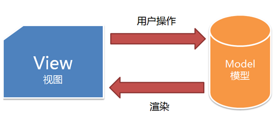
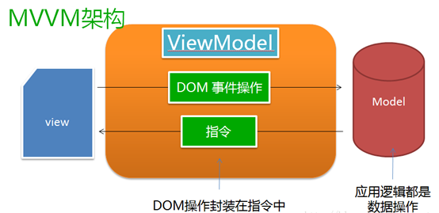
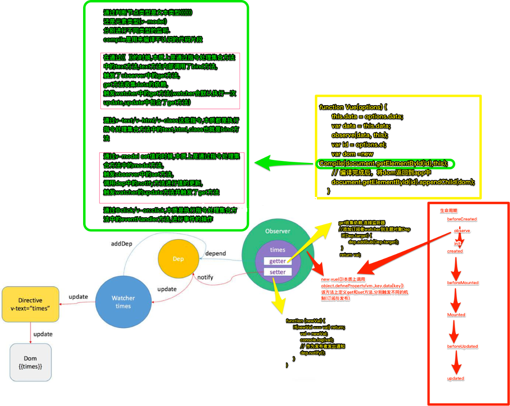
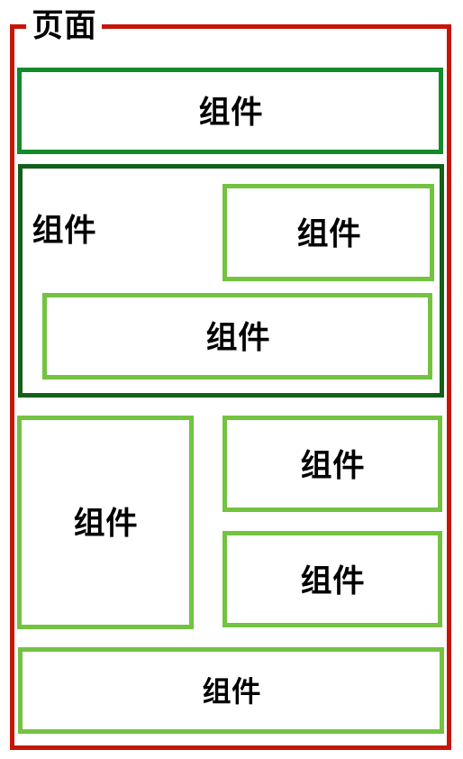

vue.js是一套构建用户界面的渐进式框架，vue.js的目标是通过尽可能简单的API实现响应的数据绑定和组合的视图组件。
vue通过DOM事件操作和指令来进行视图层和模型层的相互通讯，会为每一处需要动态更新的DOM节点创建一个指令对象。每当一个指令对象观测的数据变化时，它便会对所绑定的目标节点执行相应的DOM操作。基于指令的数据绑定使得具体的DOM操作都被合理地封装在指令定义中，业务代码只需要涉及模板和对数据状态的操作即可，这使得应用的开发效率和可维护性都大大提升。
因此，数据绑定，组件是整个vue的核心。响应的数据绑定就是数据驱动视图的概念。它让你在写 Web 应用介面时，只需要关注两件事：数据如何展示和数据如何变化。一旦数据发生变化时，比如用户输入，或者 ajax 请求返回后数据发现修改，对应的视图介面会自动的进行更新。
vue.js是MVVM的架构，如图：

从图中可以看出视图层和模型层的相互传递，通过用户操作来绑定一些DOM事件来重新渲染到视图层。具体的内部架构如下图：

一、 数据绑定：
实现方式：数据绑定即是视图层和模型层的双向绑定。即数据的改变驱动了视图的自动更新。
通过ViewModel控制，修改数据，从而控制View的展示，实现MVVM的思想。

里面的两个属性getter和setter，在这两个函数内部实现依赖的收集和触发，而且完美支持嵌套的对象结构。对于数组，则通过包裹数组的可变方法（比如push）来监听数组的变化。这使得操作Vue.js的数据和操作原生对象几乎没有差别。
Observer 对象结合在一起的纽带observe -> 触发setter -> watcher -> 触发update -> Directive -> 触发update -> 指令（如上图流程所示）
<span>Hello, this is {{name}}</span>
<script>
var app = new Vue({
el : '#app',
data : {
name: 'i3yuan'
}
})
</script>function Vue(option) {
var data = option.data
this.data = data
// 挂载 getter 和 setter
observe(data, this)
var id = option.el
// 编译 模板
var dom = new Compile(document.querySelector(id), this)
// 把编译好的模板挂载到 #app 上
document.querySelector(id).appendChild(dom)
}
//observe构造函数
function observe(obj, vm) {
Object.keys(obj).forEach(key => {
defineReactive(vm, key, obj[key])
})
}
//defineReactive
function defineReactive(vm, key, val) {
// 为每个变量分配一个 dep实例
var dep = new Dep()
// 配置getter和setter并且挂载到vm上
Object.defineProperty(vm, key, {
get() {
if ( Dep.target ) {
// JS的浏览器单线程特性， 保证整个全局变量在同一时间内， 只有一个监听器使用
dep.addSub(Dep.target)
}
return val
},
set(newVal) {
if ( newVal == val ) return;
val = newVal;
// 作为发布者发出通知
dep.notify()
}
})
}
//Dep构造函数
function Dep() {
// 存放watcher
this.subs = []
}
Dep.prototype = {
// 添加watcher, 也就是添加订阅
addSub(sub) {
this.subs.push(sub)
},
// 通知所有watcher
notify() {
this.subs.forEach(sub => {
sub.update()
})
}
}
function Compile(node, vm) {
if(node) {
this.$frag = this.nodeToFragment(node, vm)
return this.$frag
}
}
//watcher构造函数
function Watcher(vm, node, name, type) {
// 单例， 使用原因未知
Dep.target = this
// 姓名
this.name = name;
// 呵呵哒 uid
this.id = ++uid;
// 与变量相关的Node节点
this.node = node;
// vm 实例
this.vm = vm;
// 变量类型 nodeValue || value
this.type = type;
// 触发自己原型上的update方法
this.update()
// Watcher 实例创建结束就把单例置空
Dep.target = null
}
Watcher.prototype = {
update() {
this.get()
if(!batcher) {
// bastcher 单例
batcher = new Batcher()
}
// 加入队列
batcher.push(this)
},
// 获取新值挂到自己的实例上
get() {
this.value = this.vm[this.name] // 触发getter
}
}new Vue –> Observe 挂载 setter 和 getter –> Compile 编译模板 –> 为每个指令分配一个watcher –> 创建时会调用一次watcher.update 将自己加入到batcher的队列 –>
并且此时会触发 getter 将watcher加入dep –> batcher 统一来处理watcher后初始化自己 –> 当用户修改某个变量时 –> dep通知watcher –> watcher又被加入batcher处理 –> watcher 更新dom
二、视图组件:
组件，相信大部分开发人员在开发现代框架的时候都或多或少的遇到一些组件，可想而知，现代框架已经走向了组件化的道路，虽然不同的主流框架都有不同封装组件的方式，但是核心思想都差不多一样。通过分离页面，使得整个页面由很多个组件构成，给我们的第一个印象就是，就像我们平时使用到的MVC中的分视图，或者子视图，但是又不一样，虽然组件是一部分，但是却是自己的一个整体，和其他组件相互独立，高内聚低耦合，可以通过自定义标签的形式来使用。
因此，在开发中， 把整一个网页的拆分成一个个区块，每个区块我们可以看作成一个组件。网页由多个组件拼接或者嵌套组成：

// 定义一个名为 Mycomponent 的新组件
Vue.component('Mycomponent', {
// 模板
template: '<div>{{msg}} {{privateMsg}}</div>',
// 接受参数
props: {
msg: String
},
// 私有数据，需要在函数中返回以避免多个实例共享一个对象
data: function () {
return {
privateMsg: 'component!'
}
}
})
<Mycomponent msg="i3yuan"></Mycomponent>组件的核心选项：
1 模板（template）：模板声明了数据和最终展现给用户的DOM之间的映射关系。
2 初始数据（data）：一个组件的初始数据状态。对于可复用的组件来说，这通常是私有的状态。
3 接受的外部参数(props)：组件之间通过参数来进行数据的传递和共享。
4 方法（methods）：对数据的改动操作一般都在组件的方法内进行。
5 生命周期钩子函数（lifecycle hooks）：一个组件会触发多个生命周期钩子函数，最新2.0版本对于生命周期函数名称改动很大。
6 私有资源（assets）：Vue.js当中将用户自定义的指令、过滤器、组件等统称为资源。一个组件可以声明自己的私有资源。私有资源只有该组件和它的子组件可以调用。
注意事项
1.通过官方文档的学习和总结，认识到了vue的框架和通讯方式，以视图组件和数据绑定为核心构建完整的渐进式的框架。
2.从上述的两大核心的描述，我们大体理解了Vue的构建方式，通过基本的指令控制DOM,实现提高应用开发效率和可维护性。
3.下一节我们将对Vue视图组件的核心概念进行详细说明。